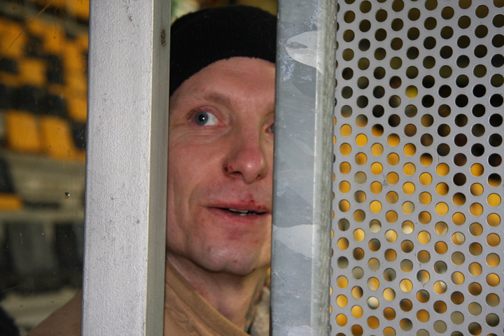
Welkom bij de muur tussen Zuid en West.
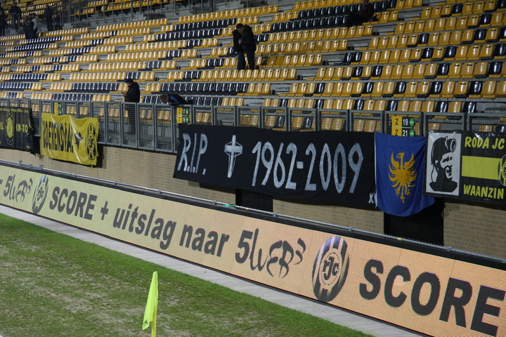
Het stadion is vrijwel compleet ontdaan van spandoeken. Dit is een uur voor
de wedstrijd toen er nog enkele hingen.
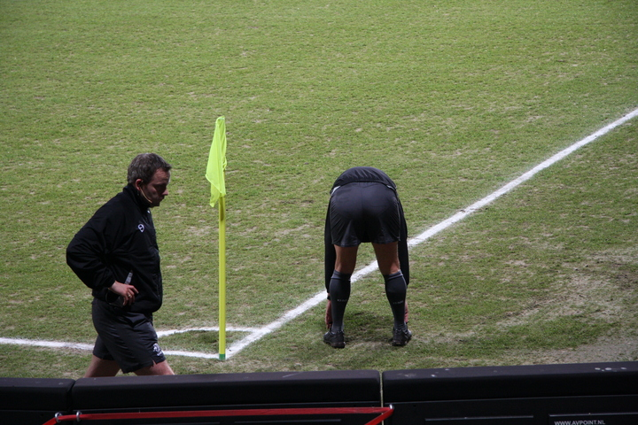
Haverkort rekt en strekt.
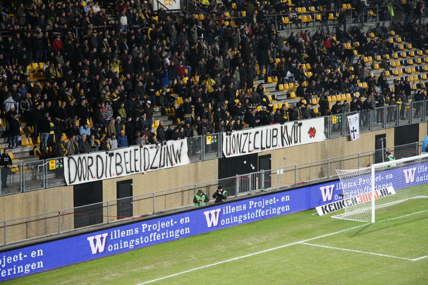
Duidelijk signaal.
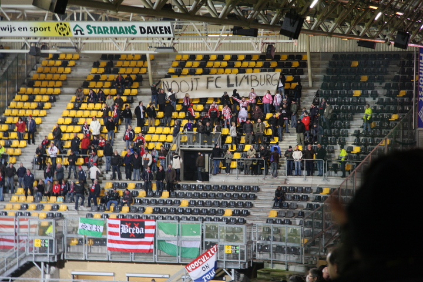
Mooi gebaar van de SPARTA-fans dat beantwoord wordt met een passend
applaus.
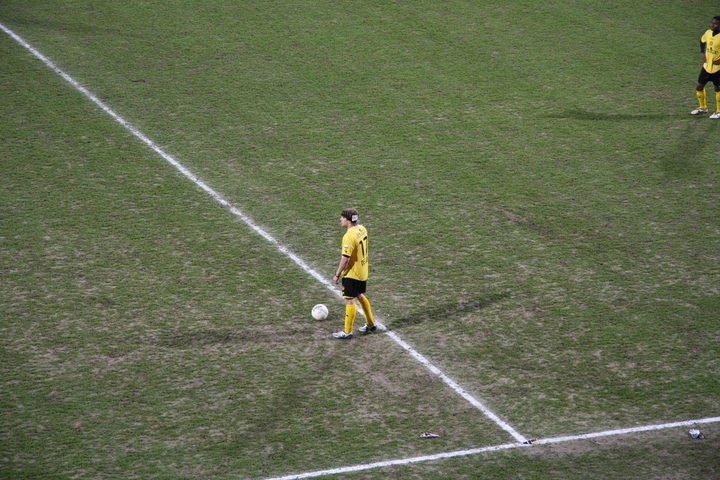
De Jong met nooit-FCL sticker achter zijn oor speelt opeens een goede
wedstrijd.
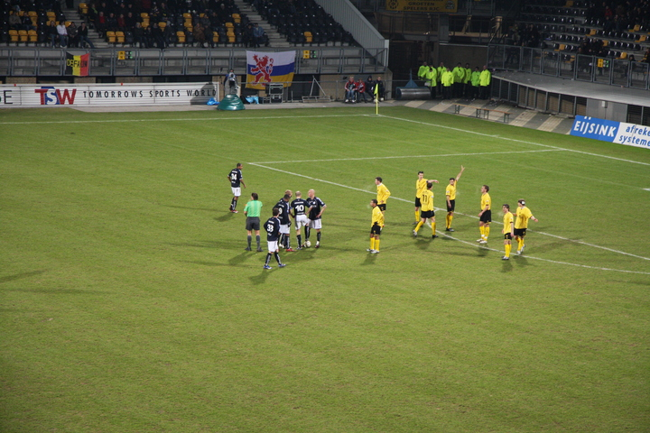
Vrije trap Sparta.
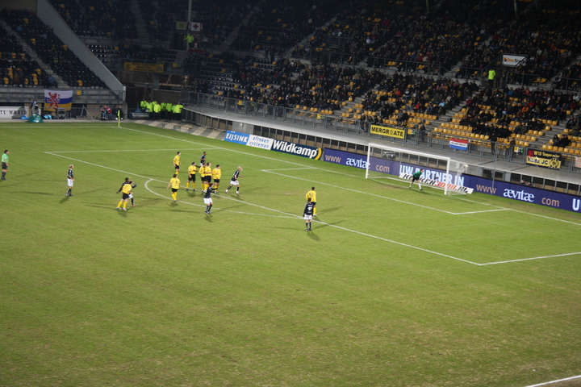
Goal. Proficiat Sparta!!!
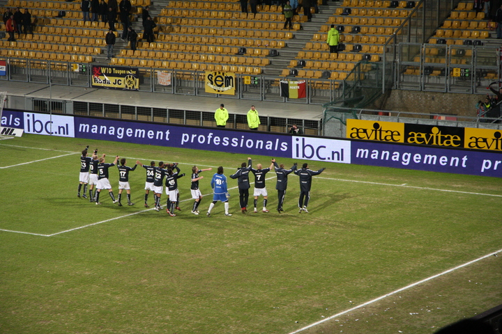
SP-AR-TA !!!
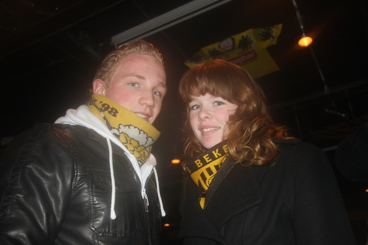
Jeungske oet Remunj en maedje oet Bergen.
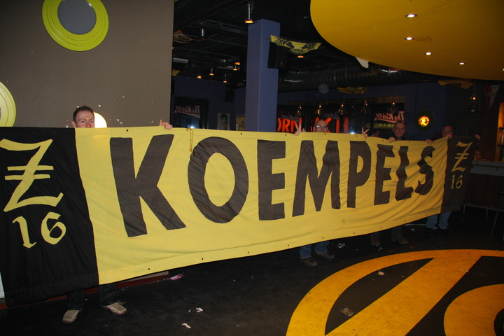
Deze landelijk bekende vlag zal niet meer schitteren bij FC Luchtkasteel.
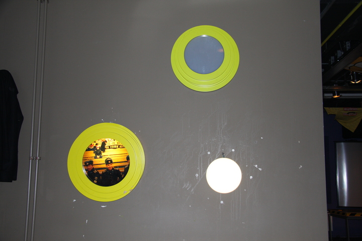
De Kickoff werd in de pauze verbouwd. Vooral de Fortunagroene armaturen
werden gesloopt. Het meubilair vloog door de
lucht.
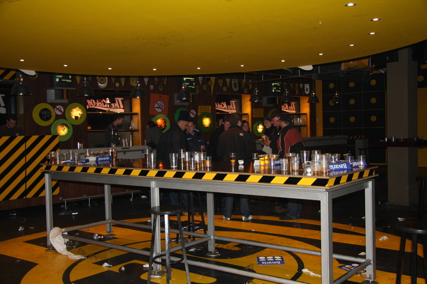
Geen enkele speler van Roda bezocht de Kickoff. Mag niet...